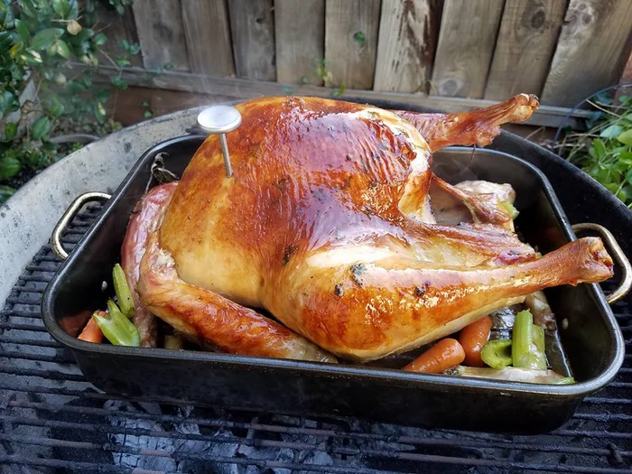

Smoked Turkey
Turkey, smoked on a charcoal grill

- ⏲️ Prep time: 120 min
- 🍳 Cook time: 90-180 min
- 🍽️ Servings: 4 4-15
Ingredients
- 1 turkey, 5-15 lb. (thawed)
- 1-2 cups whipped butter (room temperature)
- 2 cup chicken broth
- 1-4 tbsp garlic powder (optional)
- 1 lb mixed vegetables (carrots, potatoes, broccoli, etc.) (optional)
Directions
- Mix garlic powder into the whipped butter.
- Remove giblets and other materials from the turkey cavity.
- Rinse the turkey and pat dry with a towel.
- Liberally coat the turkey with the whipped butter mixture. Ensure the entire surface is coated.
- Place turkey in a foil baking pan with mixed vegetables. If available, use a rack to elevate the turkey from the bottom of the pan.
- Add chicken broth until it coats the bottom of the pan.
- Cover the pan in foil.
- Ignite the charcoal grill; arrange the coals for indirect cooking. Try to maintain a temperature of 300-400°F.
- Place the turkey in pan on the grill and cook indirectly for 1 hour.
- Remove the foil, and continue cooking over indirect heat.
- Periodically (every 15-30 minutes) baste the turkey with its own juices. If the bottom of the pan is dry, add chicken broth and reduce heat.
- Remove when the turkey reaches an internal temperature of 160°F in the breast.
- Allow to rest for 10 minutes before carving.